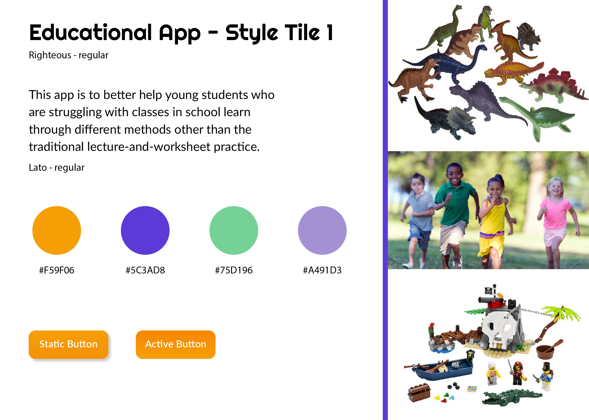
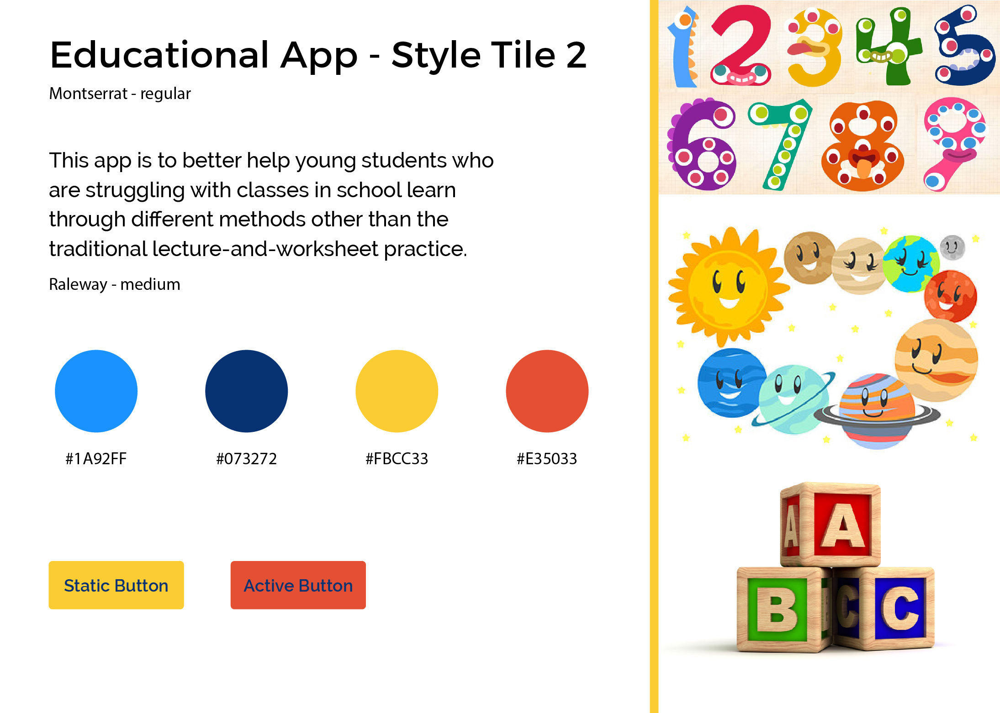
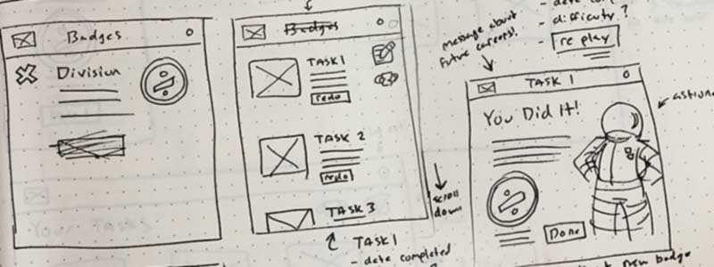

Programs/Languages Used
Illustrator, Photoshop, HTML, CSS/SASS, Jekyll
Mood Boards/Style Tiles
Originally my target audience for this app was middle schoolers. After researching more I found that many elementary schools around the country were slowly introducing tablets and iPads into their learning curriculum, and thus decided to switch to a younger audience—specifically 4th graders. In my mind, this app would be used by both teachers and their students (Teachers and students would each have their own login which would determine what content was shown), so I needed to find a style that was both engaging and fun.
 
After a few round creating style tiles, I decided on a combination of three that got my overall message across to the most amount of people.
Wireframing
Seeing as how my main audience would be children, I needed to make sure that the usability was as simple as possible, and included a lot of feedback. Starting from mobile and working up, I kept thinking of interactive lessons that all seemed very stale. I ended up changing my thinking and started focusing on the idea of the user exploring and learning through experience. The concept was unfortunately not as doable in the timeframe I had, but I was able to design and build an MVP that translated my idea to other people.

Challenges
Early on I ran into the challenge of narrowing down what my concept was and how to best translate it into some that was doable in the amount of time I was given. When it comes to educational apps, scope has always been something that I struggle with.
Designing with kids in mind was surprisingly easy. I had a pretty clear idea of what I wanted, visually, and it was just a matter of balancing my peers and my own opinions.
My biggest hurdle came from making the app responsive. Since I was originally thinking up something that would primarily be used on a tablet, making it work on desktop was a struggle. Instead of the thumbnails that translate well on tablet and mobile, I needed to fill more space on desktop to make it all look coherent. The desktop version became more focused on being a portal for a student to easily get the gist of their progress.